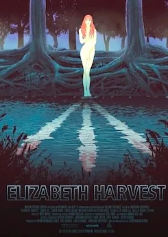

The genetics
Human cloning is the core of this horror thriller, a reworking of the Bluebeard folktale in which the forbidden room hides a laboratory of clones. The scientist, Henry Kellenberg, is a wealthy man who uses cloning to recreate his dead wife over and over, treating each copy as a possession to be enjoyed and destroyed; the film ties his science to possessiveness and abuse. His collaborator, the biologist Claire, is complicit but horrified once she understands his purpose, and the ending charges her to put her research to better use. The film also raises the question of identity, since each clone shares the original's genome but is a separate person who can make different choices, and the last one claims her own life. Adult clones produced quickly with the original's appearance are a dramatic device; a real clone would start as an embryo and grow up as a much younger twin.
How genetics is portrayed
- Overall portrayal of genetics
- negative Cloning is the instrument of a possessive, murderous scientist who treats women as replaceable possessions; the hopeful coda of the escaping clone and the plea to Claire does not redeem the science shown.
- Outcome of the genetic intervention
- negative The clones are murdered in a cycle of abuse; Henry, Oliver and the fifth Elizabeth die before the last clone escapes to a life of her own.
- Dr. Henry Kellenberg
- villain Aim: personal (negative). The wealthy scientist clones his dead wife again and again to relive his wedding night, treats the clones as non-human, murders them and blinds his son (probably his own clone); a Bluebeard figure killed by the fifth clone.
- Claire
- ambivalent Aim: personal, curiosity (neutral). The biologist Henry hired helps perfect the clones and memory implantation, is complicit and blackmailed, and is horrified by his purpose; the last clone hands her the journal and urges her to use her research better.
The story
Elizabeth, a young bride, arrives at the isolated, luxurious house of her much older husband, the scientist Dr. Henry Kellenberg, where only the housekeeper Claire and Henry's blind adult son Oliver live. Henry tells her she may enter every room except one in the basement. Curiosity wins, and she finds clones of herself; Henry discovers her disobedience and murders her. Six weeks later, another Elizabeth arrives and follows the same path, but she kills Henry first. Oliver makes her read Claire's journal, which reveals that the original Elizabeth was Henry's wife, who died of a rare illness, and that Henry hired Claire, a biologist, to help him clone her. He then relived his wedding night with each clone before killing her. The journal also suggests that Oliver is a clone of Henry. After a further clone kills Oliver and the fifth Elizabeth, the last one returns the journal to Claire, urging her to use her research better, and leaves to live her own life.